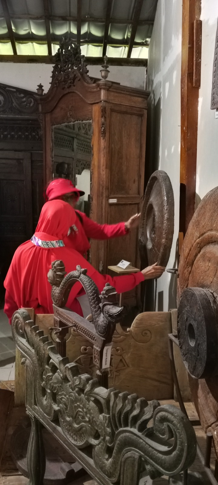
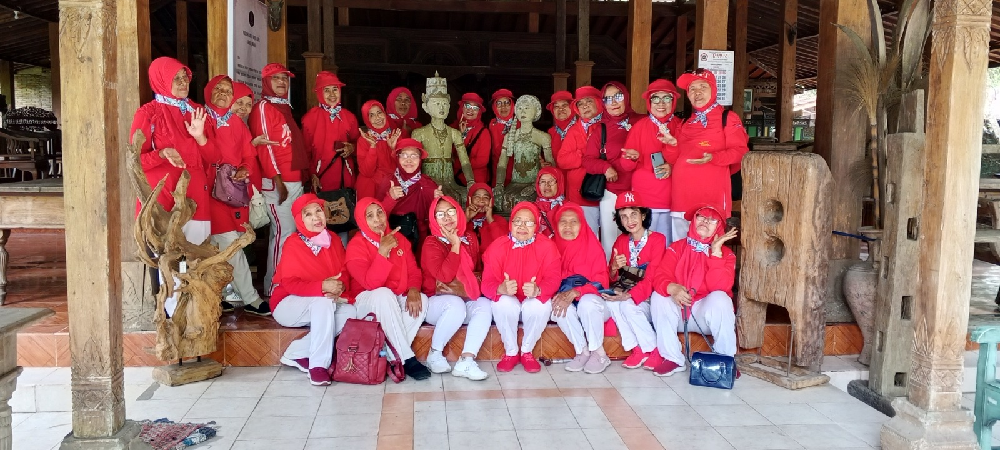
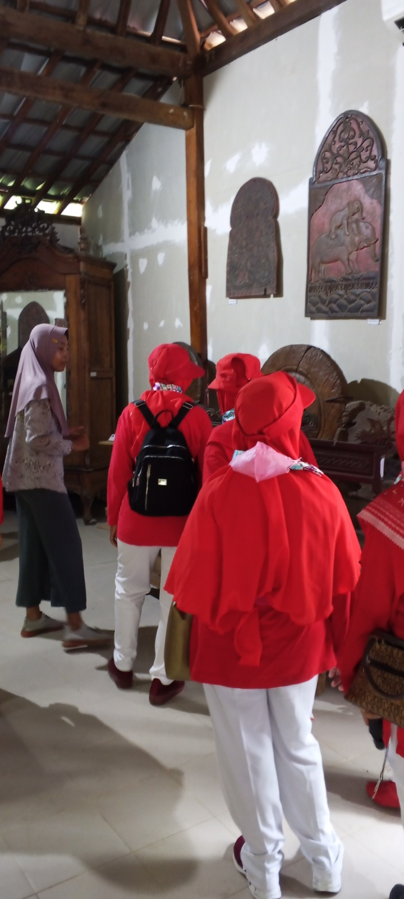

Peraturan Pengunjung Museum Kayu & Kriya Ambar Polah
Aturan Umum & Konservasi Koleksi
- Dilarang menyentuh, memanjat, atau memindahkan koleksi dalam bentuk apapun (patung kayu, perabotan, atau artefak kriya lainnya).
- Dilarang membawa makanan dan minuman ke dalam area pameran galeri. Area makan telah disediakan di luar zona koleksi.
- Dilarang membawa senjata tajam, benda berbahaya, atau barang yang dapat merusak fasilitas museum.
- Wajib menjaga kebersihan dan tidak membuang sampah sembarangan di seluruh area museum dan taman.
Fotografi dan Dokumentasi
- Pengambilan foto untuk kepentingan pribadi dan non-komersial diperbolehkan tanpa menggunakan flash (kilat cahaya).
- Penggunaan tongkat narsis (selfie stick) dan tripod besar dilarang di area galeri yang padat pengunjung.
- Untuk tujuan komersial (pre-wedding, iklan, film), wajib mengajukan izin tertulis dan mematuhi biaya serta ketentuan yang berlaku.
Kenyamanan dan Keamanan
- Pengunjung wajib mengenakan pakaian yang sopan dan tertutup.
- Wajib menjaga ketenangan dan menghindari berbicara dengan suara keras, terutama di dekat koleksi atau saat berada dalam tur.
- Orang tua atau wali bertanggung jawab penuh atas perilaku anak-anak di bawah pengawasan mereka.
- Tas berukuran besar, ransel, dan jaket harus dititipkan di loker atau penitipan barang yang telah disediakan.
- Pengunjung yang melanggar peraturan dapat diminta untuk meninggalkan area museum tanpa pengembalian biaya tiket.
Foto Pengunjung


